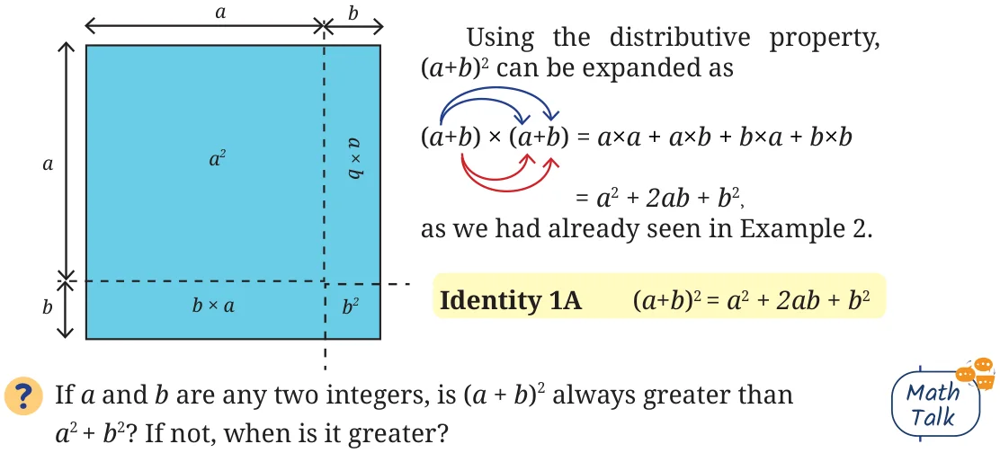
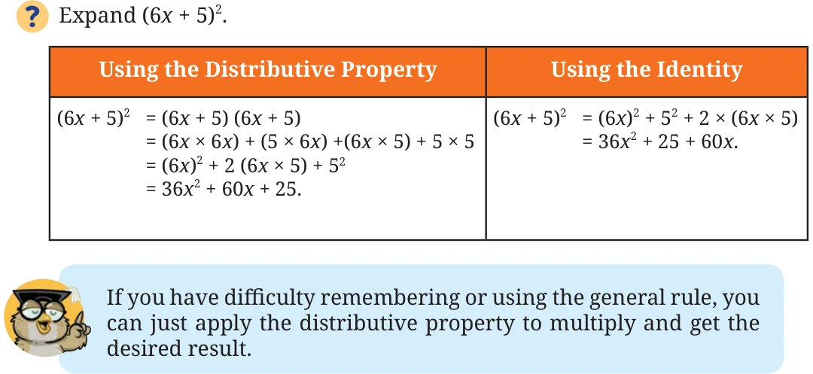
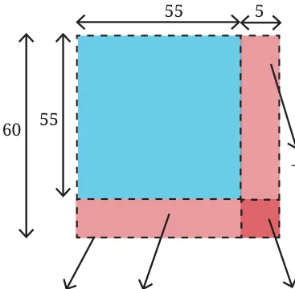

Square of the Sum/Difference of Two Numbers
The area of a square of sidelength 60 units is 3600 sq. units (60 ) and that
of a square of sidelength 5 units is 25 sq. units (5 ). Can we use this to find the area of a square of sidelength 65 units? A square of sidelength 65 can be split into 4 regions as shown in the figure \(- a\) square of sidelength 60, a square of sidelength 5, and two rectangles of sidelengths 60 and 5. The area of the square of sidelength 65 is the sum of the areas of all its constituent parts. Can you find the areas of the four parts in the figure above? We get

\(65 = (60 + 5) = 60 + 5 + 2 \times (60 \times 5)\). \(= 3600 + 25 + 600 = 4225\) sq. units.
Let us multiply \((60 + 5) \times (60 + 5)\) using the distributive property.
\((60 + 5) \times (60 + 5) = 60 \times 60 + 5 \times 60 + 60 \times 5 + 5 \times 5\)
\(= 60 + 2 \times (60 \times 5) + 5\) .
What if we write 65 as \((30 + 35)\) or \((52 + 13)\) ? Draw the figures and check the area that you get. Let us look at the general expression for the
square of sum of two numbers, (a + b) .

Use Identity 1A to find the values of 104 , 37 . (Hint: Decompose 104 and 37 into sums or differences of numbers whose squares are easy to compute.)
( \(+ 3)\) (ii) \((6 +\) p)

Expand \((3j + 2k)\) using both the identity and by applying the distributive property.
Can we use \(60 (=3600)\) and \(5 (=25)\) to find the value of \((60 - 5)\) or 55 ? Let us approach this through geometry by drawing a square of side length 55 sitting inside a square of sidelength 60.
Area of a square of sidelength 55 is \((60 - 5) = 55\) .

\(- 60 \times 5 60 - (60 \times 5) - (5 \times 60)\).
\(60 \times 60 - 5 \times 60 +5 \times 5\)

So,
\((60 - 5) = 60 - (60 \times 5) - (5 \times 60) + 5\)
\(= 3600 - 300 - 300 + 25 = 3025\).
The area of the square of sidelength 55 is 3025 sq. units.
We have seen what (a + b) gives when expanded. What is the
expansion of (a - b) ? Using the distributive property,
(a - b) = (a - b) \(\times\) (a - b)
= (a) - ba - ab + (b)
\(= a - 2ab + b\) .
We can also use the expansion of (a + b) to find the expansion of
(a - b) . Think how.
Hint: (a - b) = (a + ( - b)) .
We can now directly use the expansion of (a + b) .
(a + ( - b) = (a) + ( - b) \(+ 2 \times\) (a) \(\times\) ( - b)

Find the general expansion of (a - b) using geometry, as we did for 55 .
Use the identity (a - b) to find the values of (a) 99 and (b) 58 .
Expand the following using both Identity 1B and by applying the distributive property
- (i)(b \(- 6)\) (ii) ( \(- 2a + 3)\) (iii) \((7y - \frac{3}{4z}\) )